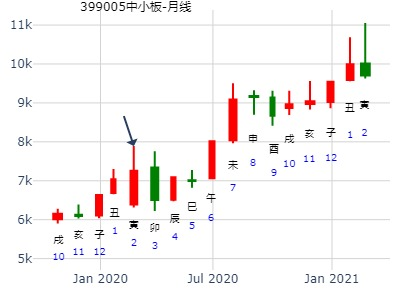
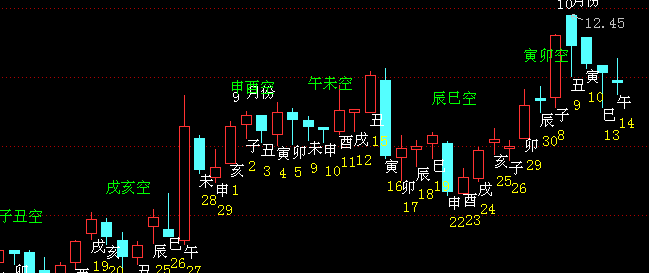
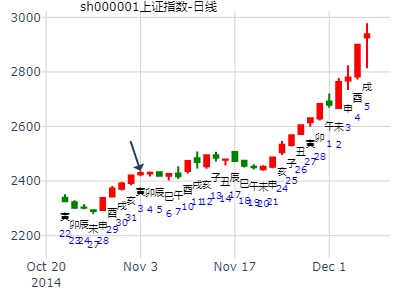

测399005中小板指在2020年走势
公历起卦时间：2020年1月27日11时3分 (手工指定)
干支：己亥年 丁丑月 己巳日 庚午时 （日空：戌亥）
巽宫：巽为风 (六冲) 震宫：雷风恒
六神 伏神 本 卦 变 卦
勾陈 兄弟辛卯木 ▅▅▅▅▅ 世 ○→ 妻财庚戌土 ▅▅ ▅▅ 应
朱雀 子孙辛巳火 ▅▅▅▅▅ ○→ 官鬼庚申金 ▅▅ ▅▅
青龙 妻财辛未土 ▅▅ ▅▅ ╳→ 子孙庚午火 ▅▅▅▅▅
玄武 官鬼辛酉金 ▅▅▅▅▅ 应 官鬼辛酉金 ▅▅▅▅▅ 世
白虎 父母辛亥水 ▅▅▅▅▅ 父母辛亥水 ▅▅▅▅▅
腾蛇 妻财辛丑土 ▅▅ ▅▅ 妻财辛丑土 ▅▅ ▅▅

占事：002028思源电气二周走势如何？
起卦方式：手动摇卦 易经股市论坛 www.yijingstock.com 在线排盘系统
公历时间：2014年9月1日16时9分
干 支：甲午年 壬申月 乙亥日 甲申时 (申酉)
巽宫：巽为风（六冲） 震宫：雷风恒
六神 【本 卦】 【变 卦】
玄武 ▄▄▄▄▄ 兄弟辛卯木 世O-> ▄▄ ▄▄ 妻财庚戌土 应
白虎 ▄▄▄▄▄ 子孙辛巳火 O-> ▄▄ ▄▄ 官鬼庚申金
螣蛇 ▄▄ ▄▄ 妻财辛未土 X-> ▄▄▄▄▄ 子孙庚午火
勾陈 ▄▄▄▄▄ 官鬼辛酉金 应 ▄▄▄▄▄ 官鬼辛酉金 世
朱雀 ▄▄▄▄▄ 父母辛亥水 ▄▄▄▄▄ 父母辛亥水
青龙 ▄▄ ▄▄ 妻财辛丑土 ▄▄ ▄▄ 妻财辛丑土
可视为连动，看涨。
马后炮：实际是上卦全部合绊。明显天跌是寅日与申日，寅日属于冲实旬空申。（注：4日涨，16日跌) 丑日冲动态旬空的未。

姓名：九戒 出生年:1981 性别：男
占事：11月 亥月大盘 起卦方式：手动摇卦
公历时间：2014年11月1日8时42分
干 支：甲午年 甲戌月 丙子日 壬辰时 旬 空：辰巳 申酉 (申酉) 午未
巽宫：巽为风（六冲） 震宫：雷风恒
六神 【本 卦】 【变 卦】
青龙 ▄▄▄▄▄ 兄弟辛卯木 世O-> ▄▄ ▄▄ 妻财庚戌土 应
玄武 ▄▄▄▄▄ 子孙辛巳火 O-> ▄▄ ▄▄ 官鬼庚申金
白虎 ▄▄ ▄▄ 妻财辛未土 X-> ▄▄▄▄▄ 子孙庚午火
螣蛇 ▄▄▄▄▄ 官鬼辛酉金 应 ▄▄▄▄▄ 官鬼辛酉金 世
勾陈 ▄▄▄▄▄ 父母辛亥水 ▄▄▄▄▄ 父母辛亥水
朱雀 ▄▄ ▄▄ 妻财辛丑土 ▄▄ ▄▄ 妻财辛丑土
